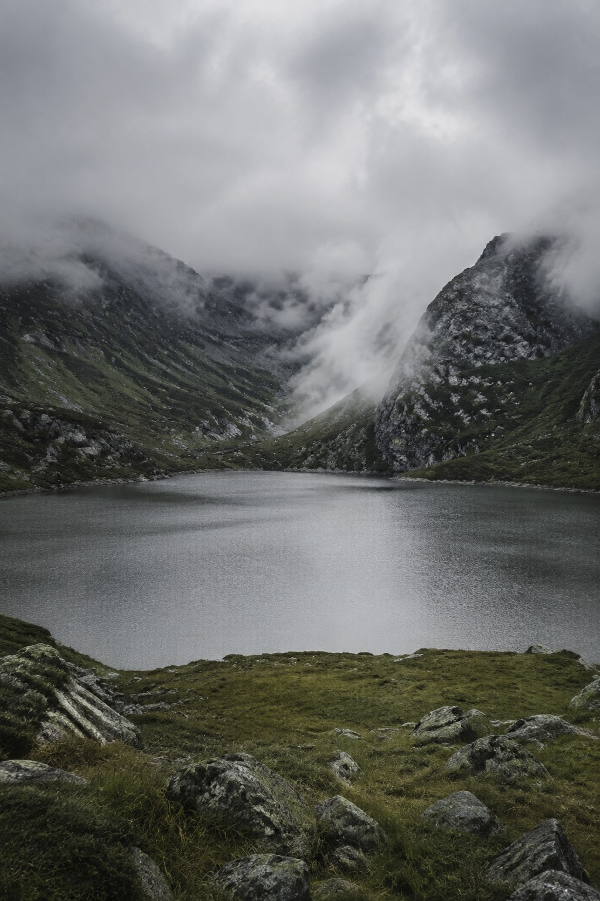
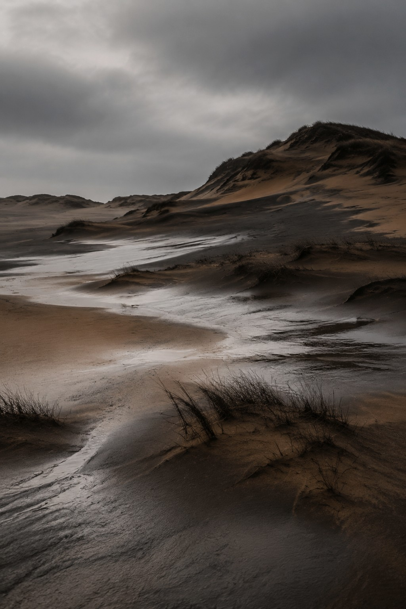
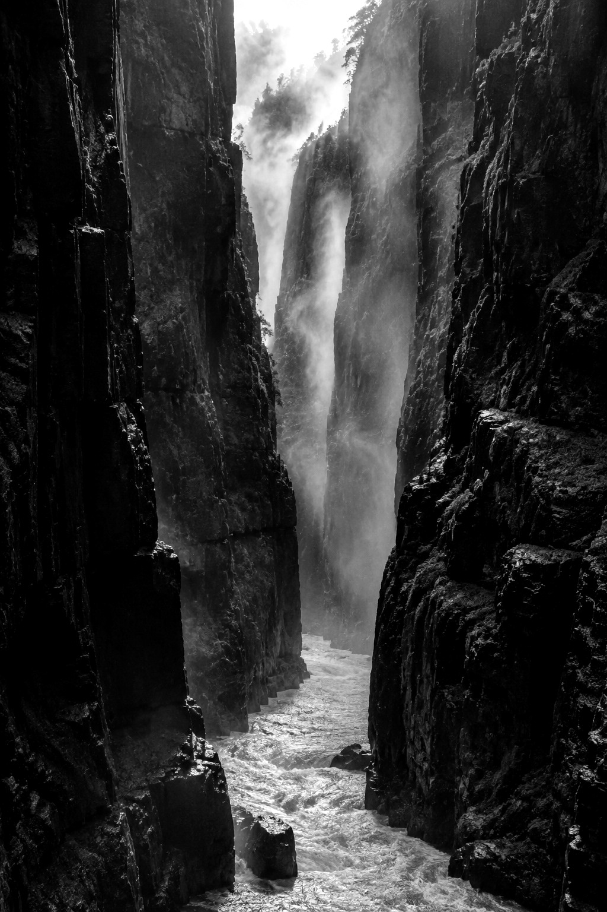
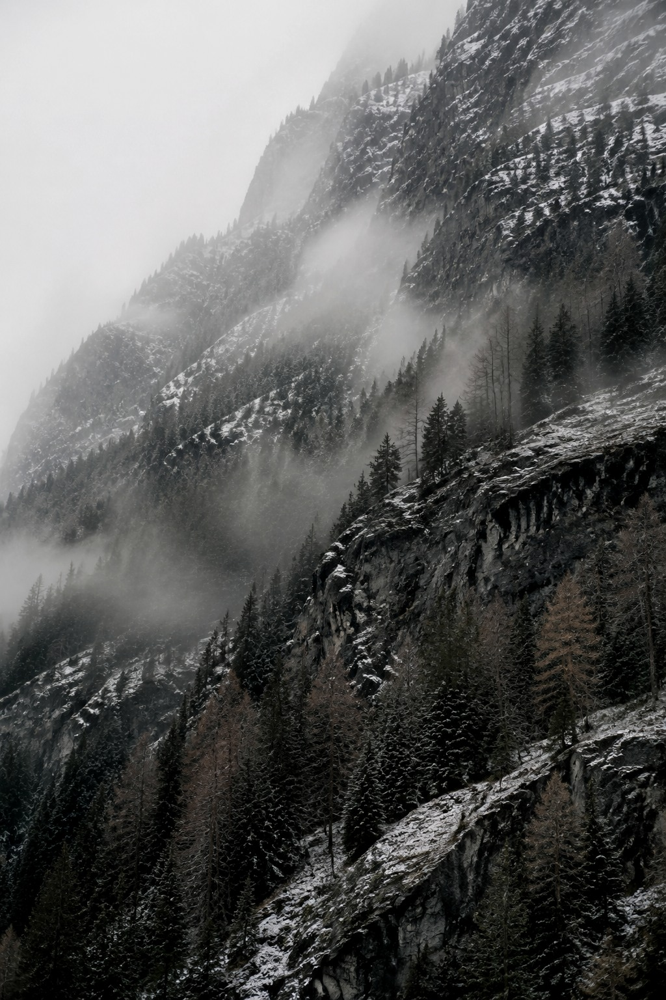

01
MT Presence is a fine art photography practice by MT, shaped around quiet images, long looking, and the space between abstraction and the visible world.




MT Presence is a fine art photography practice by MT, shaped around quiet images, long looking, and the space between abstraction and the visible world.
The work does not treat photography as simple documentation. It uses landscape, weather, surface, and distance to hold a moment before it becomes explanation.
Each image is made as an encounter: something to return to, collect, live with, and see differently over time.
Enter the archive and spend time with the work.
For collection inquiries, exhibitions, commissions, or licensing, contact MT Presence directly.
Contact Artist